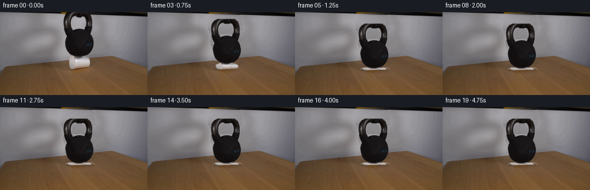
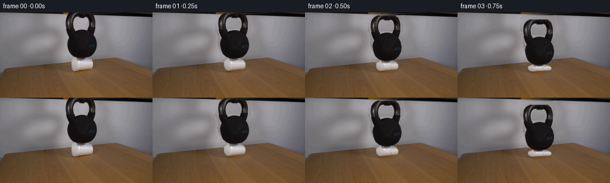

CODING AGENTS AS PIXEL WORLD MODELS
traex/GPT-5.6-Sol · 0190
点击播放 · 原生 RGB 像素
逐轮保存的候选
回放视频、检查图与代码变化。
每份候选均可单独播放。实际图片检查记录在下方工具轨迹中。
候选 01播放与检查图
点击播放 · 原生 RGB 像素


展开代码变化
--- 上一保存版本
+++ 本次保存版本
@@ -0,0 +1,171 @@
+from pathlib import Path
+import cv2
+import numpy as np
+from PIL import Image
+import artifact_io
+
+# Analytic 2-D continuation of the photographed demonstration. The original
+# photograph supplies all of the appearance; only masks, warps and local
+# lighting are synthesized.
+CASE = Path(__file__).resolve().parent
+SRC = np.asarray(Image.open(CASE / "first_frame.png").convert("RGB"), dtype=np.uint8)
+H, W = SRC.shape[:2]
+
+
+def aa_polygon(points, blur=.55):
+ s = 4
+ m = np.zeros((H*s, W*s), np.uint8)
+ p = np.round(np.asarray(points)*s).astype(np.int32)
+ cv2.fillPoly(m, [p], 255, lineType=cv2.LINE_AA)
+ m = cv2.resize(m, (W,H), interpolation=cv2.INTER_AREA)
+ if blur:
+ m = cv2.GaussianBlur(m, (0,0), blur)
+ return m.astype(np.float32)/255.0
+
+# Kettlebell silhouette. Its ring has a true transparent opening, while the
+# broad lower casting is one continuous piece.
+body = aa_polygon([(111,29),(114,20),(123,27),(148,27),(158,21),(159,31),
+ (157,38),(160,44),(162,53),(161,61),(157,69),(151,74),
+ (144,78),(132,78),(124,74),(118,69),(115,61),(113,51),
+ (114,43),(112,36)], .42)
+outer = aa_polygon([(109,31),(109,17),(111,9),(116,3),(122,0),(151,0),
+ (157,5),(160,13),(161,31),(153,34),(148,29),(148,15),
+ (145,10),(141,8),(130,8),(126,11),(124,16),(124,30),
+ (119,34)], .42)
+inner = aa_polygon([(125,29),(125,16),(128,12),(131,10),(140,10),(144,12),
+ (147,16),(147,29),(143,30),(128,30)], .35)
+ring = np.clip(outer-inner,0,1)
+bell_a = np.maximum(body, ring)
+# Suppress the few light background pixels caught by the geometric edge but
+# retain reflected highlights on the iron itself.
+gray = cv2.cvtColor(SRC, cv2.COLOR_RGB2GRAY).astype(np.float32)
+confidence = np.clip((142-gray)/35, 0, 1)
+bell_a *= np.maximum(.70, confidence)
+
+# Cup outline as photographed, including its softly lit white foam surface.
+cup_a = aa_polygon([(127,76),(145,76),(152,79),(156,85),(156,93),(152,98),
+ (146,101),(129,99),(123,96),(119,89),(120,82)], .50)
+# Remove very dark cast-iron overlap from the top of the cup sprite.
+cup_a *= np.clip((gray-72)/58,0,1)
+
+
+def clean_plate():
+ """Recover the small area hidden by the objects from adjacent pixels."""
+ plate = SRC.astype(np.float32).copy()
+ remove = np.maximum(bell_a, cup_a)
+ # Feathered, row-wise reconstruction preserves the photographed gradients.
+ for y in range(H):
+ ids = np.flatnonzero(remove[y] > .025)
+ if not len(ids):
+ continue
+ lo, hi = max(0, ids[0]-3), min(W-1, ids[-1]+3)
+ lx = np.arange(max(0,lo-15), lo)
+ rx = np.arange(hi+1, min(W,hi+16))
+ # At the top edge the original has an unrelated dark falloff. Sampling
+ # farther out avoids carrying it into the newly revealed wall.
+ if len(lx)==0 or len(rx)==0: continue
+ lc = np.median(SRC[y,lx].astype(np.float32),axis=0)
+ rc = np.median(SRC[y,rx].astype(np.float32),axis=0)
+ for x in range(lo,hi+1):
+ t=(x-lo)/max(1,hi-lo)
+ base=lc*(1-t)+rc*t
+ # Fine fixed sensor/paint texture borrowed from a clear part of row.
+ tx = 22 + ((x-lo)*3 + y*5) % 55
+ local = SRC[y,tx].astype(np.float32)
+ local_mean=np.median(SRC[y,20:80].astype(np.float32),axis=0)
+ plate[y,x]=base + .16*(local-local_mean)
+ # Hide any row boundaries without softening the untouched photograph.
+ smooth=cv2.GaussianBlur(plate,(0,0),1.15)
+ f=np.clip(cv2.GaussianBlur(remove,(0,0),1.0)[...,None],0,1)
+ plate=plate*(1-f*.28)+smooth*(f*.28)
+ return np.clip(plate,0,255).astype(np.uint8)
+
+PLATE = clean_plate()
+
+
+def affine_layer(rgb, alpha, dx, dy, angle=0.0):
+ M=cv2.getRotationMatrix2D((136,52), angle, 1.0)
+ M[:,2] += (dx,dy)
+ r=cv2.warpAffine(rgb,M,(W,H),flags=cv2.INTER_LINEAR,
+ borderMode=cv2.BORDER_CONSTANT,borderValue=(0,0,0))
+ a=cv2.warpAffine(alpha,M,(W,H),flags=cv2.INTER_LINEAR,
+ borderMode=cv2.BORDER_CONSTANT,borderValue=0)
+ return r,a
+
+
+def cup_layer(drop):
+ # The base remains on the tabletop while the upper rim follows the weight.
+ top, base = 76.0+drop, 101.0
+ h=max(2.5, base-top)
+ q=min(1.0,drop/20.0)
+ spread=1.0 + .16*q
+ yy,xx=np.mgrid[0:H,0:W].astype(np.float32)
+ sy=76.0 + (yy-top)*(25.0/h)
+ sx=137.5 + (xx-137.5)/spread
+ valid=(yy>=top-1)&(yy<=base+1)
+ r=np.empty_like(SRC)
+ for c in range(3):
+ r[...,c]=cv2.remap(SRC[...,c],sx,sy,cv2.INTER_LINEAR,
+ borderMode=cv2.BORDER_CONSTANT,borderValue=0)
+ a=cv2.remap(cup_a,sx,sy,cv2.INTER_LINEAR,
+ borderMode=cv2.BORDER_CONSTANT,borderValue=0)
+ a*=valid
+ return r,a
+
+
+def blend(dst, rgb, a):
+ af=np.clip(a,0,1)[...,None]
+ return dst*(1-af)+rgb.astype(np.float32)*af
+
+# A physically quick collapse followed by a tiny under-damped settling motion.
+drops = [0, 1, 5, 12, 18, 20, 19, 20, 20, 20, 20, 20, 20, 20, 20, 20, 20, 20, 20, 20]
+xs = [0, 0, 0, 0, 0, 0, 1, 0, 0, 0, 0, 0, 0, 0, 0, 0, 0, 0, 0, 0]
+angs = [0, 0, 0, 0, .12,-.10,.16,0, 0, 0,0,0,0,0,0,0,0,0,0,0]
+frames=[SRC.copy()]
+for i in range(1,20):
+ d=float(drops[i]); q=min(1,d/20)
+ fr=PLATE.astype(np.float32).copy()
+
+ # Contact shadow grows and darkens as the bell reaches the wood.
+ sh=np.zeros((H,W),np.uint8)
+ cy=int(99 + .05*d)
+ cv2.ellipse(sh,(137,cy),(int(15+12*q),int(2+2*q)),0,0,360,
+ int(70+65*q),-1,lineType=cv2.LINE_AA)
+ sh=cv2.GaussianBlur(sh,(0,0),2.2)
+ sf=(sh.astype(np.float32)/255.0)[...,None]
+ fr *= (1-.38*sf)
+
+ cr,ca=cup_layer(d)
+ fr=blend(fr,cr,ca)
+
+ # Creases in compressed foam: restrained, irregular dark folds that remain
+ # clipped to the cup rather than becoming free-standing marks.
+ if d>=5:
+ wrinkle=np.zeros((H,W),np.uint8)
+ top=int(76+d); base=100
+ pts1=np.array([[128,top+1],[132,(top+base)//2],[130,base]],np.int32)
+ pts2=np.array([[148,top+1],[143,(top+base)//2],[147,base]],np.int32)
+ cv2.polylines(wrinkle,[pts1,pts2],False,int(35+35*q),1,cv2.LINE_AA)
+ wrinkle=(wrinkle.astype(np.float32)/255.0)*np.clip(ca,0,1)
+ fr *= (1-.48*wrinkle[...,None])
+ if d>=18:
+ # Two small curled foam lips visible around the iron at full collapse.
+ folds=np.zeros((H,W),np.float32)
+ cv2.ellipse(folds,(119,98),(6,2),-12,180,355,.72,1,cv2.LINE_AA)
+ cv2.ellipse(folds,(157,98),(7,2),8,185,355,.65,1,cv2.LINE_AA)
+ foam=np.zeros_like(fr)+np.array([187,181,177],np.float32)
+ fr=blend(fr,foam,folds)
+
+ br,ba=affine_layer(SRC,bell_a,xs[i],d,angs[i])
+ # Very mild exposure blur only during the fastest quarter-second interval.
+ speed=d-drops[i-1]
+ if speed>=7:
+ br0,ba0=affine_layer(SRC,bell_a,xs[i],d-1.1,angs[i])
+ fr=blend(fr,br0,ba0*.16)
+ fr=blend(fr,br,ba)
+ frames.append(np.clip(fr,0,255).astype(np.uint8))
+
+frames=np.stack(frames)
+assert frames.shape==(20,144,256,3) and frames.dtype==np.uint8
+assert np.array_equal(frames[0],SRC)
+artifact_io.save(frames, CASE)
可观测工具轨迹
实际执行的命令与返回图片。
命令 1exit 0
/bin/bash -lc "cat GENERATION_RULES.md && printf '\\n---PROMPT---\\n' && cat prompt.txt"
命令 2exit 1
/bin/bash -lc "find . -maxdepth 2 -type f -printf '%p\\n' | sort && printf '\\n---TOOLS---\\n' && command -v ffmpeg && command -v python3"
命令 3exit 0
/bin/bash -lc "python3 - <<'PY'
from PIL import Image
import numpy as np
im=np.array(Image.open('first_frame.png').convert('RGB'))
print(im.shape, im.dtype, im.min(), im.max(), im.mean((0,1)))
# color samples and row mean/luma stats
lum=im.mean(2)
for y in range(0,144,8): print(y, np.mean(im[y],0).round(1), lum[y].min(),lum[y].max())
print('opencv?')
try: import cv2; print(cv2.__version__)
except Exception as e: print(e)
PY"命令 4exit 0
/bin/bash -lc "python3 - <<'PY'
from PIL import Image
import numpy as np
im=np.array(Image.open('first_frame.png').convert('RGB'))
# 2x4 blocks, luma chars; ANSI impossible, annotate hues separate
Y=.2126*im[:,:,0]+.7152*im[:,:,1]+.0722*im[:,:,2]
chars=' .:-=+*#%@'
for sy,sx in [(4,4),(3,3),(2,4)]:
print('\\nscale',sx,sy)
h=144//sy;w=256//sx
a=Y[:h*sy,:w*sx].reshape(h,sy,w,sx).mean((1,3))
for row in a:
print(''.join(chars[min(9,int(v/256*10))] for v in row))
PY"命令 5exit 0
/bin/bash -lc "python3 - <<'PY'
import cv2, numpy as np
from PIL import Image
im=np.array(Image.open('first_frame.png').convert('RGB')); g=cv2.cvtColor(im,cv2.COLOR_RGB2GRAY)
for t in [20,30,40,50,60,70,80,100,120,140,160,180,200,220]:
m=(g<t).astype('uint8'); n,l,st,c=cv2.connectedComponentsWithStats(m)
comps=sorted(st[1:].tolist(), key=lambda x:x[4], reverse=True)[:8]
print(t, comps)
# values sample map bounding boxes based bg model; coords at selected grid
print('\\nsamples')
for y in range(0,145,10):
print('y',y,[(x,im[min(y,143),x].tolist()) for x in range(0,256,10)])
PY"命令 6exit 0
/bin/bash -lc "python3 - <<'PY'
import cv2,numpy as np
from PIL import Image
im=np.array(Image.open('first_frame.png').convert('RGB')); g=cv2.cvtColor(im,cv2.COLOR_RGB2GRAY)
for y in range(0,102,2):
s=''
for x in range(90,191,2):
v=g[y,x]
s += ' ' if v>145 else ('.' if v>115 else ('-' if v>85 else ('+' if v>55 else ('#' if v>25 else '@'))))
print(f'{y:3}',s)
PY"命令 7exit 0
/bin/bash -lc 'cat artifact_io.py'
命令 8exit 0
/bin/bash -lc "python3 - <<'PY'
import cv2,numpy as np
from PIL import Image
I=np.array(Image.open('first_frame.png').convert('RGB')); g=cv2.cvtColor(I,cv2.COLOR_RGB2GRAY)
for y in range(0,101,2):
print(y, end=': ')
for t in [40,70,100,125]:
m=g[y]<t; z=np.flatnonzero(m)
runs=[]
if len(z):
bd=np.r_[0,np.flatnonzero(np.diff(z)>1)+1,len(z)]
runs=[(int(z[a]),int(z[b-1])) for a,b in zip(bd[:-1],bd[1:]) if z[b-1]>=95 and z[a]<=180]
print(t,runs,end='; ')
print()
PY"命令 9exit 0
/bin/bash -lc "cat > generate.py <<'PY'
from pathlib import Path
import cv2
import numpy as np
from PIL import Image
import artifact_io
# Analytic 2-D continuation of the photographed demonstration. The original
# photograph supplies all of the appearance; only masks, warps and local
# lighting are synthesized.
CASE = Path(__file__).resolve().parent
SRC = np.asarray(Image.open(CASE / \"first_frame.png\").convert(\"RGB\"), dtype=np.uint8)
H, W = SRC.shape[:2]
def aa_polygon(points, blur=.55):
s = 4
m = np.zeros((H*s, W*s), np.uint8)
p = np.round(np.asarray(points)*s).astype(np.int32)
cv2.fillPoly(m, [p], 255, lineType=cv2.LINE_AA)
m = cv2.resize(m, (W,H), interpolation=cv2.INTER_AREA)
if blur:
m = cv2.GaussianBlur(m, (0,0), blur)
return m.astype(np.float32)/255.0
# Kettlebell silhouette. Its ring has a true transparent opening, while the
# broad lower casting is one continuous piece.
body = aa_polygon([(111,29),(114,20),(123,27),(148,27),(158,21),(159,31),
(157,38),(160,44),(162,53),(161,61),(157,69),(151,74),
(144,78),(132,78),(124,74),(118,69),(115,61),(113,51),
(114,43),(112,36)], .42)
outer = aa_polygon([(109,31),(109,17),(111,9),(116,3),(122,0),(151,0),
(157,5),(160,13),(161,31),(153,34),(148,29),(148,15),
(145,10),(141,8),(130,8),(126,11),(124,16),(124,30),
(119,34)], .42)
inner = aa_polygon([(125,29),(125,16),(128,12),(131,10),(140,10),(144,12),
(147,16),(147,29),(143,30),(128,30)], .35)
ring = np.clip(outer-inner,0,1)
bell_a = np.maximum(body, ring)
# Suppress the few light background pixels caught by the geometric edge but
# retain reflected highlights on the iron itself.
gray = cv2.cvtColor(SRC, cv2.COLOR_RGB2GRAY).astype(np.float32)
confidence = np.clip((142-gray)/35, 0, 1)
bell_a *= np.maximum(.70, confidence)
# Cup outline as photographed, including its softly lit white foam surface.
cup_a = aa_polygon([(127,76),(145,76),(152,79),(156,85),(156,93),(152,98),
(146,101),(129,99),(123,96),(119,89),(120,82)], .50)
# Remove very dark cast-iron overlap from the top of the cup sprite.
cup_a *= np.clip((gray-72)/58,0,1)
def clean_plate():
\"\"\"Recover the small area hidden by the objects from adjacent pixels.\"\"\"
plate = SRC.astype(np.float32).copy()
remove = np.maximum(bell_a, cup_a)
# Feathered, row-wise reconstruction preserves the photographed gradients.
for y in range(H):
ids = np.flatnonzero(remove[y] > .025)
if not len(ids):
continue
lo, hi = max(0, ids[0]-3), min(W-1, ids[-1]+3)
lx = np.arange(max(0,lo-15), lo)
rx = np.arange(hi+1, min(W,hi+16))
# At the top edge the original has an unrelated dark falloff. Sampling
# farther out avoids carrying it into the newly revealed wall.
if len(lx)==0 or len(rx)==0: continue
lc = np.median(SRC[y,lx].astype(np.float32),axis=0)
rc = np.median(SRC[y,rx].astype(np.float32),axis=0)
for x in range(lo,hi+1):
t=(x-lo)/max(1,hi-lo)
base=lc*(1-t)+rc*t
# Fine fixed sensor/paint texture borrowed from a clear part of row.
tx = 22 + ((x-lo)*3 + y*5) % 55
local = SRC[y,tx].astype(np.float32)
local_mean=np.median(SRC[y,20:80].astype(np.float32),axis=0)
plate[y,x]=base + .16*(local-local_mean)
# Hide any row boundaries without softening the untouched photograph.
smooth=cv2.GaussianBlur(plate,(0,0),1.15)
f=np.clip(cv2.GaussianBlur(remove,(0,0),1.0)[...,None],0,1)
plate=plate*(1-f*.28)+smooth*(f*.28)
return np.clip(plate,0,255).astype(np.uint8)
PLATE = clean_plate()
def affine_layer(rgb, alpha, dx, dy, angle=0.0):
M=cv2.getRotationMatrix2D((136,52), angle, 1.0)
M[:,2] += (dx,dy)
r=cv2.warpAffine(rgb,M,(W,H),flags=cv2.INTER_LINEAR,
borderMode=cv2.BORDER_CONSTANT,borderValue=(0,0,0))
a=cv2.warpAffine(alpha,M,(W,H),flags=cv2.INTER_LINEAR,
borderMode=cv2.BORDER_CONSTANT,borderValue=0)
return r,a
def cup_layer(drop):
# The base remains on the tabletop while the upper rim follows the weight.
top, base = 76.0+drop, 101.0
h=max(2.5, base-top)
q=min(1.0,drop/20.0)
spread=1.0 + .16*q
yy,xx=np.mgrid[0:H,0:W].astype(np.float32)
sy=76.0 + (yy-top)*(25.0/h)
sx=137.5 + (xx-137.5)/spread
valid=(yy>=top-1)&(yy<=base+1)
r=np.empty_like(SRC)
for c in range(3):
r[...,c]=cv2.remap(SRC[...,c],sx,sy,cv2.INTER_LINEAR,
borderMode=cv2.BORDER_CONSTANT,borderValue=0)
a=cv2.remap(cup_a,sx,sy,cv2.INTER_LINEAR,
borderMode=cv2.BORDER_CONSTANT,borderValue=0)
a*=valid
return r,a
def blend(dst, rgb, a):
af=np.clip(a,0,1)[...,None]
return dst*(1-af)+rgb.astype(np.float32)*af
# A physically quick collapse followed by a tiny under-damped settling motion.
drops = [0, 1, 5, 12, 18, 20, 19, 20, 20, 20, 20, 20, 20, 20, 20, 20, 20, 20, 20, 20]
xs = [0, 0, 0, 0, 0, 0, 1, 0, 0, 0, 0, 0, 0, 0, 0, 0, 0, 0, 0, 0]
angs = [0, 0, 0, 0, .12,-.10,.16,0, 0, 0,0,0,0,0,0,0,0,0,0,0]
frames=[SRC.copy()]
for i in range(1,20):
d=float(drops[i]); q=min(1,d/20)
fr=PLATE.astype(np.float32).copy()
# Contact shadow grows and darkens as the bell reaches the wood.
sh=np.zeros((H,W),np.uint8)
cy=int(99 + .05*d)
cv2.ellipse(sh,(137,cy),(int(15+12*q),int(2+2*q)),0,0,360,
int(70+65*q),-1,lineType=cv2.LINE_AA)
sh=cv2.GaussianBlur(sh,(0,0),2.2)
sf=(sh.astype(np.float32)/255.0)[...,None]
fr *= (1-.38*sf)
cr,ca=cup_layer(d)
fr=blend(fr,cr,ca)
# Creases in compressed foam: restrained, irregular dark folds that remain
# clipped to the cup rather than becoming free-standing marks.
if d>=5:
wrinkle=np.zeros((H,W),np.uint8)
top=int(76+d); base=100
pts1=np.array([[128,top+1],[132,(top+base)//2],[130,base]],np.int32)
pts2=np.array([[148,top+1],[143,(top+base)//2],[147,base]],np.int32)
cv2.polylines(wrinkle,[pts1,pts2],False,int(35+35*q),1,cv2.LINE_AA)
wrinkle=(wrinkle.astype(np.float32)/255.0)*np.clip(ca,0,1)
fr *= (1-.48*wrinkle[...,None])
if d>=18:
# Two small curled foam lips visible around the iron at full collapse.
folds=np.zeros((H,W),np.float32)
cv2.ellipse(folds,(119,98),(6,2),-12,180,355,.72,1,cv2.LINE_AA)
cv2.ellipse(folds,(157,98),(7,2),8,185,355,.65,1,cv2.LINE_AA)
foam=np.zeros_like(fr)+np.array([187,181,177],np.float32)
fr=blend(fr,foam,folds)
br,ba=affine_layer(SRC,bell_a,xs[i],d,angs[i])
# Very mild exposure blur only during the fastest quarter-second interval.
speed=d-drops[i-1]
if speed>=7:
br0,ba0=affine_layer(SRC,bell_a,xs[i],d-1.1,angs[i])
fr=blend(fr,br0,ba0*.16)
fr=blend(fr,br,ba)
frames.append(np.clip(fr,0,255).astype(np.uint8))
frames=np.stack(frames)
assert frames.shape==(20,144,256,3) and frames.dtype==np.uint8
assert np.array_equal(frames[0],SRC)
artifact_io.save(frames, CASE)
PY
python3 generate.py
python3 - <<'PY'
from PIL import Image
import numpy as np
z=np.load('pixels.npz')['pixels']
a=np.array(Image.open('first_frame.png').convert('RGB'))
p=((z[:,:,0]>>16)&255).astype('uint8')
print('saved',z.shape,'frame0 red exact',np.array_equal(p,a[:,:,0]))
for i in range(20):
b=np.array(Image.open(f'frames/{i:02}.png'))
print(i, round(np.mean(abs(b.astype(float)-a)),2), b.min(),b.max())
PY"命令 10exit 0
/bin/bash -lc "python3 - <<'PY'
from PIL import Image
import cv2,numpy as np
for fn in ['frames/00.png','frames/01.png','frames/02.png','frames/03.png','frames/04.png','frames/05.png','frames/06.png','frames/07.png']:
im=np.array(Image.open(fn)); g=cv2.cvtColor(im,cv2.COLOR_RGB2GRAY)
chars=' .:-=+*#%@'
a=g.reshape(48,3,64,4).mean((1,3))
print('\\n',fn)
for row in a:
print(''.join(chars[min(9,int(v/256*10))] for v in row))
PY"命令 11exit 0
/bin/bash -lc "python3 - <<'PY'
from PIL import Image
import numpy as np
for y,x in [(40,130),(50,140),(20,120),(40,150),(60,130),(75,135),(85,135),(95,135)]:
print(y,x,[np.array(Image.open(f'frames/{i:02}.png'))[y,x].tolist() for i in range(8)])
PY"保存候选 1 份；完成命令 11 次；可验证图片返回 0 张。原始 API 响应与完整日志保留在本地。